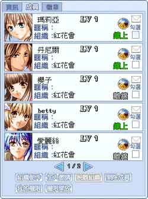

组队交友
| 交友功能： 在游戏中玩家们再也不需孤单一个人玩游戏了！游戏中的交友功能替不善交际的玩家解决了这个困扰，以玩家输入的生日、血型来帮您配对，当来电感觉打开时，要多注意屏幕右下方交友功能的爱心图案，心跳频率愈快时…就可以留意附近的玩家，或许他(她)就是您的最佳速配情人呢！ |
|
|
| 组队功能： 每一个小队连同队长，共有四人，组队的好处是玩家们在打怪练功时可以一起奋战并且互相照应，遇等级较高的BOSS怪时，您和队友团队互助的默契是能否获得胜利最大的关键喔！另外，在使用可搭载多人的交通工具时，您的队友也可以跟您一起搭乘！ |
| 组织功能： 还没创立或尚未加入组织的玩家，可以前至威灵村的国会大楼申请创立组织。玩家们可以结识志同道合的伙伴一起加入组织，玩家们在解任务时就不用担心找不到人帮忙了。会长除了可以制定组织规章外，还可开放权限、邀请玩家加入组织、授权组员使用四项功能包括加入邀请、修改徽章。 在组织接口上方设有徽章功能，虽然仅会长一人可以上传组织徽章，但组织中的每位成员皆可绘制组织徽章。还可一览组织成员信息，如上线状态、等级、昵称、属性等。另设有邮件功能，组织成员离线时也可以发邮件给他们，是不是很方便呢！ |